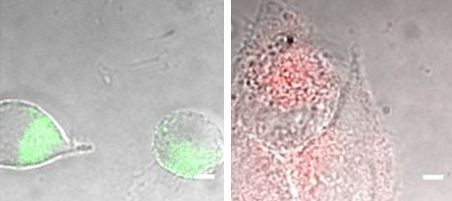
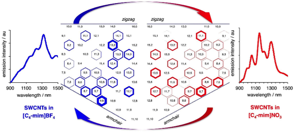

|
TCU Department of Physics and Astronomy Laboratory of Bio-Nanotechnology |

Current Projects
Gaphene quantum dots. Graphene-based quantum dots, synthesized from biocompatible materials for the first time in our group provide dual-color fluorescence imaging and sensing of cancerous environments. These quantum dots can be advantageously utilized in both optoelectronics and biotechnology.
 GO Imaging/drug delivery/cancer detection. We selectively modify and utilize nanoscale graphene oxide (GO)
flakes for imaging and cancer detection in several cancer cell types including HeLa, MCF-7 and HepG2.
GO Imaging/drug delivery/cancer detection. We selectively modify and utilize nanoscale graphene oxide (GO)
flakes for imaging and cancer detection in several cancer cell types including HeLa, MCF-7 and HepG2.
 Carbon nanotube gene delivery. Single-Walled Carbon Nanotubes (SWCNTs) are used to deliver small interfering RNA to cells and animal tissues
protecting siRNA from degradation and making RNA interference gene therapy possible. SWCNTs emit light in the near-infrared,
where biological tissue exhibits least autofluorescence and thus are also used as imaging agents tracking pathways of gene delivery.
Carbon nanotube gene delivery. Single-Walled Carbon Nanotubes (SWCNTs) are used to deliver small interfering RNA to cells and animal tissues
protecting siRNA from degradation and making RNA interference gene therapy possible. SWCNTs emit light in the near-infrared,
where biological tissue exhibits least autofluorescence and thus are also used as imaging agents tracking pathways of gene delivery.
 Multidrug delivery by SWCNTs.
We use SWCNTs as universal carriers and imaging agents for hydrophobic drugs and sensitive gene sequences to address liver and lung diseases.
Multidrug delivery by SWCNTs.
We use SWCNTs as universal carriers and imaging agents for hydrophobic drugs and sensitive gene sequences to address liver and lung diseases.
 Theoretical modeling.
We use computer molecular simulation and theoretical basis build by our group to explain optical and electronic structure of graphene derivatives,
such as graphene oxide, quantum dots and single-walled carbon nanotubes.
Theoretical modeling.
We use computer molecular simulation and theoretical basis build by our group to explain optical and electronic structure of graphene derivatives,
such as graphene oxide, quantum dots and single-walled carbon nanotubes.
 Graphene derivatives.
We synthesize and study the optical and physical properties of multiple graphene derivatives starting from graphene oxide
and to more complex structures. The development of new graphene-based materials allows us to selectively design their unique properties
for novel applications. We can now controllably modify optical band gap of graphene oxide and convert reduced graphene oxide into GO and back
using ozone processing.
Graphene derivatives.
We synthesize and study the optical and physical properties of multiple graphene derivatives starting from graphene oxide
and to more complex structures. The development of new graphene-based materials allows us to selectively design their unique properties
for novel applications. We can now controllably modify optical band gap of graphene oxide and convert reduced graphene oxide into GO and back
using ozone processing.
SWCNTs in ionic liquids. We utilize ionic liquids to selectively modify ensemble optical properties of carbon nanotubes which could be further used in device applications.
Optical properties. We study optical properties of carbon nanomaterials and perovskites for device applications in solar cells and other optoelectronic devices.
Cryogenics. We study optical properties of materials at ultralow temperatures.